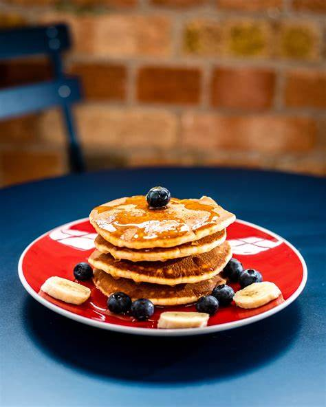

Make Pancakes
This is a great recipe that I found in my Grandma's recipe book. Judging from the weathered look of this recipe card, this was a family favorite.

-
flour
- sugar
- butter
- eggs
- baking powder
- vanilla
- In a bowl, mix all the dry ingredients.
- In another bowl, mix together the rest.
- Wisk together.
- Wait 5 minutes.
- Cook the pancakes.